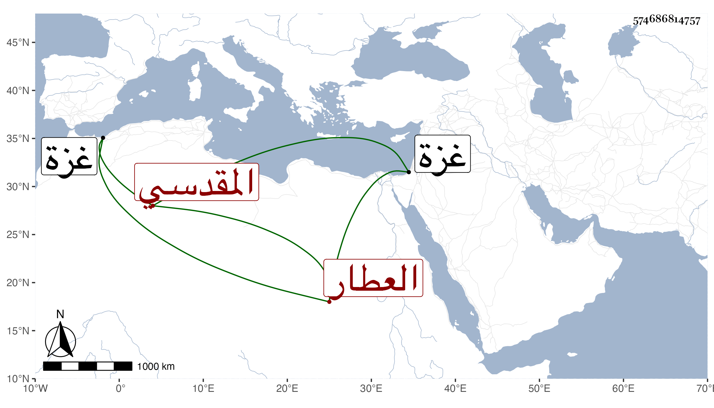

0902Sakhawi.DawLamic.ITO20230111-ara1.EIS1600.574686814757
Biography ID: 574686814757
418
محمد بن أبي بكر بن عبد الكريم الشمس المقدسي العطار بها ويعرف بابن كريم بالتصغير . سمع من الصدر الميدومي مشيخته تخريج الحسيني وأولها المسلسل وحدث سمع منه الفضلاء ، قال شيخنا في معجمه : وكان خادم قبة المعراج بالمسجد الأقصى أجاز لأولادي في سنة إحدى وعشرين . وذكره المقريزي في عقوده وقال أنه ولد بغزة بعد الثلاثين وسبعمائة وكان عاميا صدوق اللهجة . مات سنة إحدى وعشرين كذا قال .
